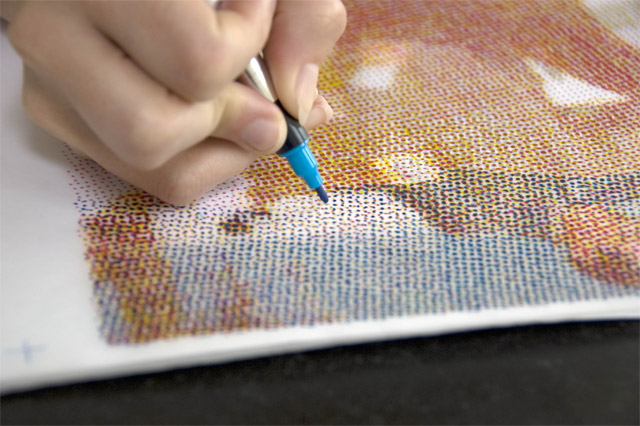

Keywords
Woodblock Printing
Stamping: Printed by putting paper or fabric on a table or a flat surface with the block on top, and pressing, or hammering, the back of the block.
Rubbing: The block is placed face side up on a table, with the paper or fabric on top. The back of the paper or fabric is rubbed with a "hard pad, a flat piece of wood, a burnisher, or a leather frotton".
Woodblock Manufacturers
Block Printing Inks
Specials inks meant for woodblock printing styles.
Printing Environmental Issues or Concerns
Letterpress Proof Printer
Illustrator: Spot Colors
Any color generated by an ink that is printed using a single run.
Color Separation Techniques
Manual: picking out the different colors, this only gives an approximation of color, not the exact ink color (selecting).
AUtomatic: (index)
Types of Paper and Vendors
Paper: bank, banana, bond, book, coater (glossy and matte), construction, cotton, fish, inkjet, kraft, laid, leather, mummy, oak tag, sandpaper, tyvek, wallpaper, washi, waterproof (friggen sweet), wove, and xuan are all different types of paper.
Vendors:
Printing Halftone Process/History
Process: reduces visual reproductions to an image that is printed with only one color of ink, in dots of differing size or spacing
History: William Fox Talbot was the first person who suggested halftone printing in the 1830s. One of the first "sucessfull" attempts was by Steven H. Horgan, printed photograph of Steinway Hall in Manhattan and it was published on December 2, 1873. The first actual sucessfull commercial method was patented by Grederic Ives in 1881. He found a way to break up an image into dots of different sizes. Later he and Louis and Max Levy perfected their method with the invention and commercial production of quality cross-lined screens.
The Human Printer
The Human Printer
Halftone Screen Angles
Angle at which the halftones of a separated color is outputted to a lithographic film, hence, printed on final product media.
Printing Ink Order
Pointillism
Small, distinct dots of color are applied in patterns to form an image.
Print Color Separations
Printers separate artwork into four plates (process colors) — one plate for each of the cyan, magenta, yellow, and black portions of the image. You can also include custom inks (spot colors) and a separate plate is created for each spot color.
Photoshop: Halftone Effect
Converts the image into a halftone version of itself.
Photoshop: Viewing, Saving and Printing Channels
Viewing:
Saving:
Printing Clannels:
The Human Printer
